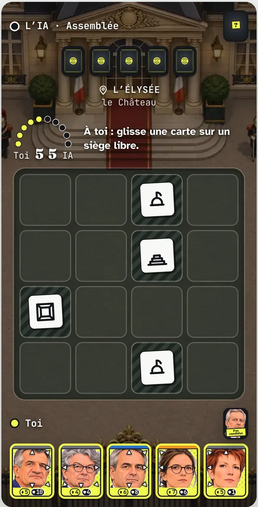
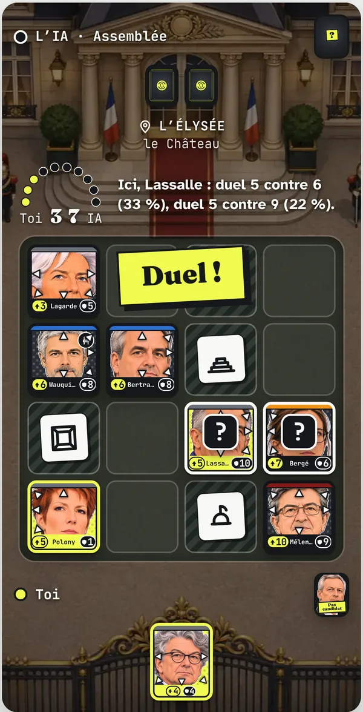
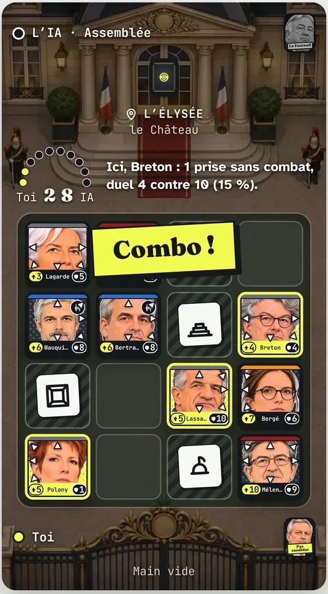
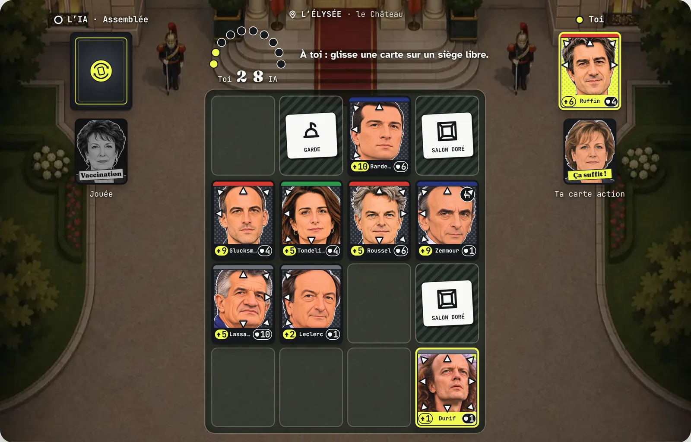
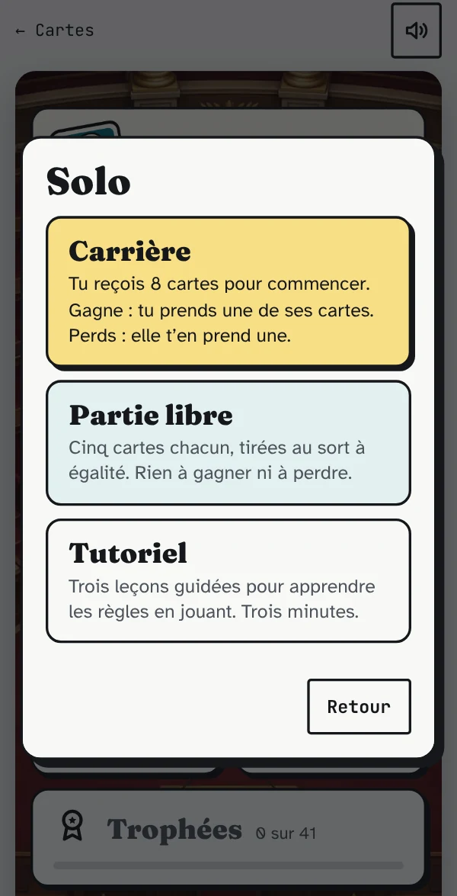
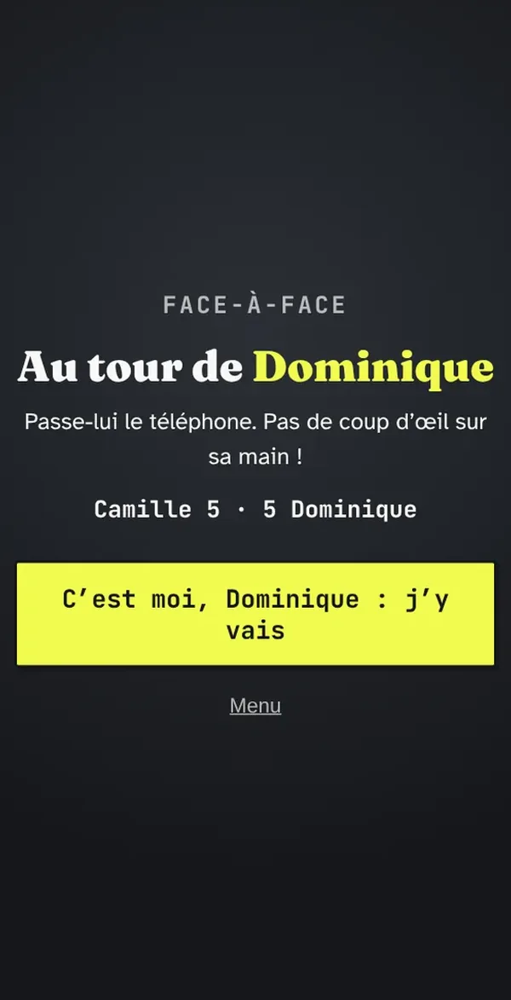
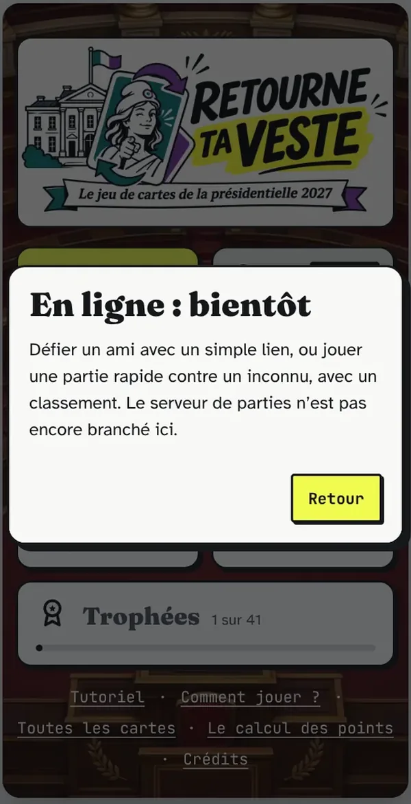

Retourne ta veste, le jeu de cartes de la présidentielle 2027
43 personnalités · 24 cartes action · 7 lieux · 41 trophées
Tu poses tes cartes, leurs flèches attaquent, les dés tranchent, et celles d’en face retournent leur veste.
Gratuit, sans publicité, dans le navigateur : téléphone ou ordinateur, rien à installer.
Trois gestes et tu joues
Chaque joueur reçoit cinq cartes. À la fin, chaque carte à ta couleur compte, sur le plateau comme en main : six sur dix, c’est la majorité absolue.
-

Pose une carte
Glisse-la sur un siège libre. Chacune de ses flèches qui touche une carte adverse l’attaque. Si la carte visée n’a pas de flèche en retour, elle est prise sans combat.
-

Gagne le duel
Si elle a une flèche en retour, c’est le duel. Tu tires entre 1 et ton Attaque, elle entre 1 et sa Défense. Le plus grand gagne, l’égalité profite au défenseur.
-

Enchaîne le combo
La carte battue change de camp et entraîne les cartes de son camp qu’elle pointait. Attention, ça marche aussi contre toi.
Pas de note à la tête du client
Chaque carte compare les 43 personnalités sur quatre faits publics. Le même calcul s’applique à tout le monde, aucune note n’est retouchée à la main et aucun sondage n’entre en compte.
![Carte de Jean-Luc Mélenchon, extrême gauche. Urnes 9 (7 712 520 voix, présidentielle 2022, 1er tour), expérience 10 (33,2 ans de mandat national), terrain 8 (21 ans d’élu local), buzz 10 (112 926 consultations de sa page Wikipédia par mois). Phrase : « Nous c’est carré. Il y a une équipe, un programme, un seul candidat. » (3 mai 2026 · annonce de candidature, TF1). Justice : Condamné en 2019 pour rébellion (3 mois avec sursis, définitif). Trois condamnations pour diffamation ou injure (2021-2022), caractère définitif non établi ; présumé innocent.](images/cartes/jean-luc-melenchon.webp)
- Quatre faits, notés de 1 à 10
-
- ↑ Urnes son meilleur score en voix
- → Expérience ses années de mandat national
- ↓ Terrain ses années d’élu local
- ← Buzz les consultations de sa page Wikipédia
- Une Attaque, une Défense
- En partie, l’Attaque vient de sa popularité (Urnes et Buzz), la Défense de son ancrage (Expérience et Terrain).
- Une phrase, datée
- Vraiment prononcée, avec la date et le lieu où elle l’a été.
- Une ligne Justice
- Seulement ce qu’un tribunal a jugé sur le fond, avec la présomption d’innocence tant que rien n’est définitif. Jamais une enquête ni une plainte.
- Ses sources
- Chaque fait renvoie à sa source, avec la date de la dernière vérification.
- Un portrait
- Généré par intelligence artificielle, avec le même traitement pour tous.
De la Mairie à l’Élysée
Chaque partie se joue dans un lieu tiré au sort, de l’hémicycle à la buvette, avec trois à cinq sièges bloqués par le décor.

- 3niveaux d’IA : Mairie, Assemblée, Élysée
- 7lieux, de l’hémicycle au plateau télé
- 24cartes action, une par joueur et par partie
- 41trophées, jusqu’au trophée platine
Commence par le tutoriel (trois minutes), puis la partie libre ou la Carrière, où chaque victoire te fait gagner une carte de l’IA, et souvent sa carte action.
Seul, à deux, et bientôt en ligne
Contre l’IA pour t’entraîner, contre quelqu’un d’assis à côté de toi pour le plaisir, et bientôt contre le reste de la France.
-

Solo
Trois niveaux d’IA, de la Mairie à l’Élysée. En Carrière, chaque victoire te fait prendre une carte de l’IA, chaque défaite t’en coûte une. Tu y collectionnes aussi les cartes action, qui ne se perdent jamais.
-

Face-à-face
Le débat de l’entre-deux-tours, à deux sur le même téléphone, depuis la tuile Multijoueur. On se le passe à chaque tour, et un écran cache ta main à l’autre. Une partie ou un match en cinq manches.
-

En ligne bientôt
Défie un ami avec un simple lien ou un code à quatre lettres, ou lance une partie rapide contre un inconnu. Les parties rapides compteront au classement.
- Aucun camp favorisé
- Aucune consigne de vote
- Aucun euro de parti
Mêmes règles et même calcul pour les 43 cartes, de l’extrême gauche à l’extrême droite. Lire la méthode
Un autre site, à part du jeu
Le Trombi 2027
Parcours, programmes et sources de chaque personnalité, sans humour, sans citation ni anecdote. Un espace distinct du jeu, pour s’informer.
Financez la démocratie… enfin, ce jeu
Retourne ta veste est fait par une seule personne, sur ses soirées et ses week-ends. S’il t’a fait rire, tu peux lui offrir un café.
![Carte de Marine Le Pen, extrême droite. Urnes 10 (13 288 686 voix, présidentielle 2022, 2d tour), expérience 9 (22,3 ans de mandat national), terrain 9 (27,1 ans d’élu local), buzz 8 (46 072 consultations de sa page Wikipédia par mois). Phrase : « Ce soir, je suis candidate à l’élection présidentielle. » (7 juillet 2026 · 20 h de TF1). Justice : Condamnée en appel (2026) pour détournement de fonds publics : 3 ans dont 1 ferme, 45 mois d’inéligibilité dont 30 avec sursis ; pourvoi en cassation, présumée innocente. Condamnée définitivement pour diffamation (2025).](images/cartes/marine-le-pen.webp)
![Carte de Éric Zemmour, extrême droite. Urnes 9 (2 485 226 voix, présidentielle 2022, 1er tour), expérience 1 (Aucun mandat national), terrain 1 (Aucun mandat local), buzz 9 (77 511 consultations de sa page Wikipédia par mois). Phrase : « Je me présente pour conserver une France française et que notre avenir soit français. » (10 novembre 2026 · 20 h de TF1). Justice : Condamnations définitives, dont contestation de crime contre l’humanité (Pétain, 2026), provocation à la haine (2025), diffamation (2026)… Condamné en 1re instance pour injure (Crépol, 2025), suite non connue ; présumé innocent.](images/cartes/eric-zemmour.webp)